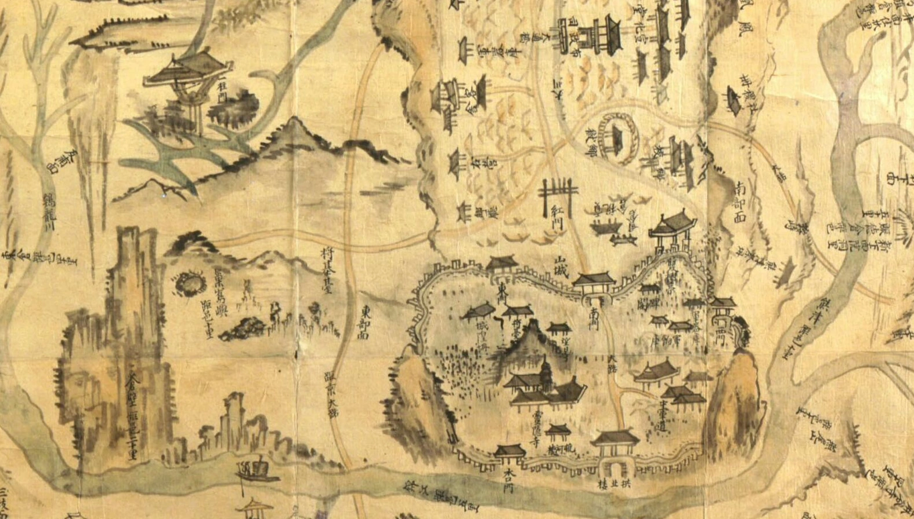
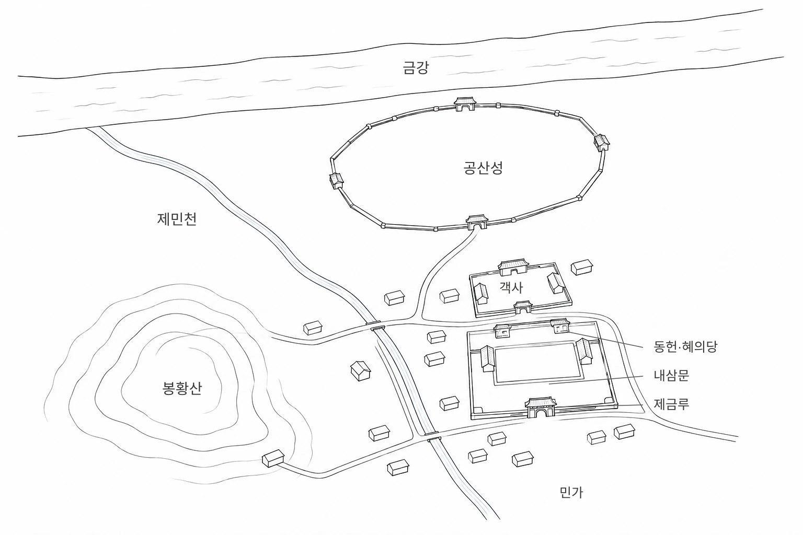
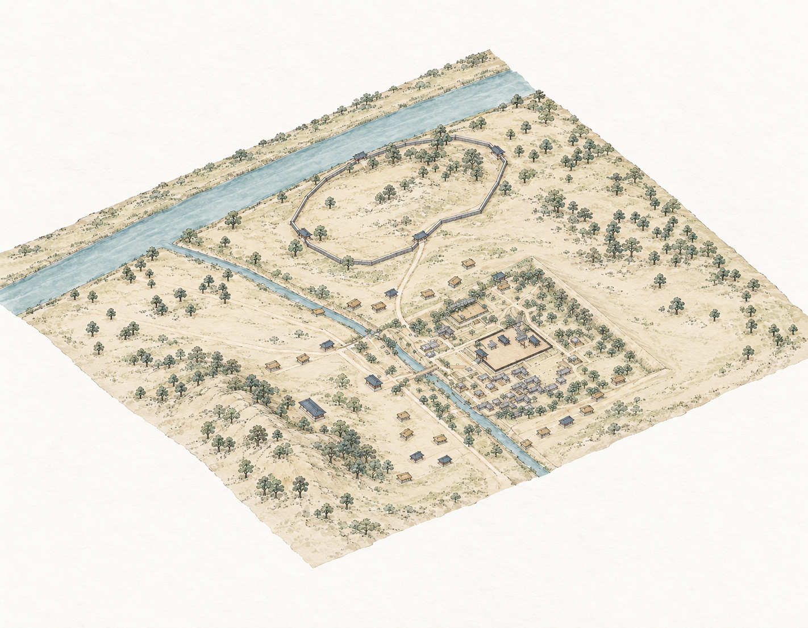
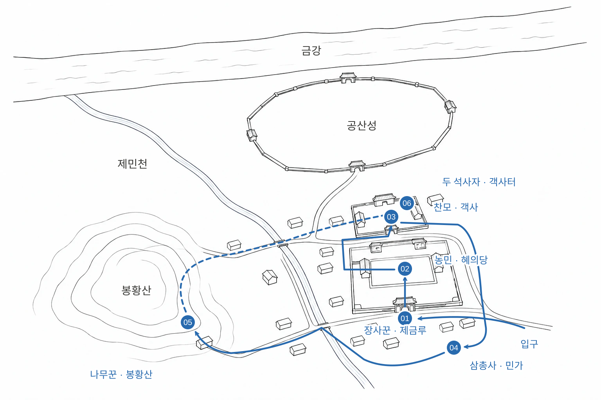

자료와 공간 배치
제공 자료를 기준으로 제금루–내삼문–동헌의 진입축과 관아·객사·민가의 관계를 구성해 주세요. 자료에 없는 거리와 높이는 연출용 해석으로 구분하고, 실측 복원으로 표기하지 마세요.Story · 01
강·산·성곽과 마을의 위치

강과 산, 건물이 놓인 자리



인물을 차례로 만난 뒤 두 석사자 앞에 도착하는 경로

장사꾼과의 만남
관아 마당의 농민
객사 앞의 찬모
골목의 주민 삼총사
산길 끝의 나무꾼
두 석사자 앞에 도착
완성된 모델과 카메라 동선을 설명하기 위해 재구성한 지시문. 실제 입력 원문과는 구분한 기록.
제공 자료를 기준으로 제금루–내삼문–동헌의 진입축과 관아·객사·민가의 관계를 구성해 주세요. 자료에 없는 거리와 높이는 연출용 해석으로 구분하고, 실측 복원으로 표기하지 마세요.장사꾼→농민→찬모→주민들→나무꾼→석사자 순서로 이동 카메라를 구성해 주세요. 24fps 기준 위치와 회전을 기록하고, 과도한 고개 흔들림 없이 길을 따라 이동한 뒤 인물 앞에서 안정된 구도로 멈추게 해 주세요.